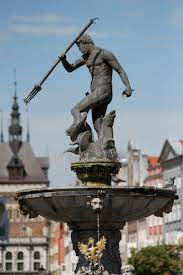

Fontanna Neptuna
Fontanna Neptuna – zabytkowa fontanna w Gdańsku, która powstała z inicjatywy burmistrza Bartłomieja Schachmanna i rady miejskiej. Stoi w najbardziej reprezentacyjnej części Gdańska – na Długim Targu, przed wejściem do Dworu Artusa.